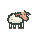

青青草原 · 小羊牧场
牧云羊场
☀
06:00
第 0 天
白昼
06:00 日出 / 18:00 入夜
48 秒后入夜
?
玩法
保存
牧场等级
LV1
¥
现金
300
♟
羊群
3
/ 6
♥
幸福度
88%
退休金 · 存一笔 ↗
¥0
云朵草场
☀
白天放牧 · 夜晚休息
+1格 ¥2
26
/
40
+1格 ¥2
22
/
40
羊群正在自由吃草
!
先给羊添草加水
点击两侧槽位补充，羊毛长满后再剪。
01 / 04
找到按钮
跳过
剪羊毛
羊毛长满后可剪
等待长毛
购入羊仔
羊圈还有 3 个空位
选羊种 · ¥160 起
成年出栏
长到 60 日龄可出栏
等待长大
本机存档
·
尚未保存
·
自动存档已开启
同步云存档
羊群会自己寻找干草和水槽。
出栏管理
选择成年羊
×
成年后可出栏，获得稳定的羊肉收入。